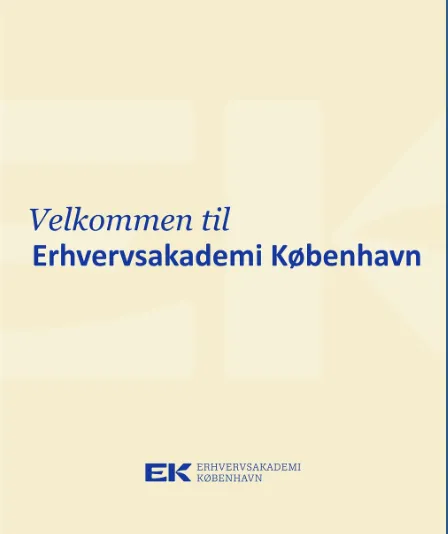

Introuge

Introuge
Beskrivelse af tema
Introugen var det første tema på Multimediedesignuddannelsen og fungerede som en introduktion til både studiet og arbejdsformen. I dette forløb blev vi introduceret til grundlæggende begreber inden for idéudvikling, research, visuel kommunikation og digital produktion. Temaet havde fokus på at lære hinanden, uddannelsen og de værktøjer, vi skal arbejde med gennem studiet, at kende.
Proces, løsning & resultater
I introugen arbejdede vi med research og idéudvikling til en titel-intro, som skulle formidle et budskab visuelt gennem video. Processen bestod af idé-generering, skitsering og planlægning, efterfulgt af optagelse og redigering af video. Vi arbejdede med simple videoredigeringsværktøjer og lærte grundlæggende principper for klipning, timing og visuel fortælling.
Derudover blev vi introduceret til vigtige studie- og samarbejdsværktøjer som ItsLearning, Figma, GitHub og præsentationsformer. Forløbet gav mig en forståelse for, hvordan man arbejder projektorienteret på uddannelsen, og hvordan samarbejde, struktur og planlægning spiller en central rolle i multimediedesignprocesser.
Introugen gav et godt fundament for resten af 1. semester og gjorde mig mere tryg i både det faglige og sociale aspekt af studiet.